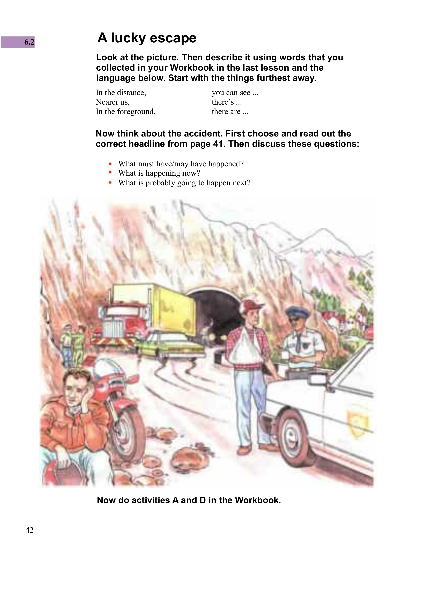

6.2 A lucky escape Look at the picture. Then describe it using words that you collected in your Workbook in the last lesson and the language below. Start with the things furthest away. In the distance, you can see ... Nearer us, there's ... In the foreground, there are ... Now think about the accident. First choose and read out the correct headline from page 41. Then discuss these questions: • What must have/may have happened? • What is happening now? • What is probably going to happen next? Now do activities A and D in the Workbook.
Now do activities A and D in the Workbook. بحذف الحرفين الوسطيين (B, C) أو بمعنى A to D، وحُفظت حرفياً.A reporter interviewed... ووُسم المتحدث بـ Reporter: ثم طُبع تحته The conversation was between the officer and (officer بدل reporter)، وحُفظ النص المطبوع حرفياً.Reporter: Well, I've heard the other people's stories. Now I'd really like to hear yours. Man: Well, I was coming to the end of the tunnel, out into the sun. It was so bright. Reporter: Go on. Man: Well, then I saw the bend to the right, and the next thing, just on the bend, I saw rocks on the road - a rock-fall. I had to move out fast into the middle of the road. Reporter: Didn't you look in your mirror first? Man: No, there was no time. And next I saw the truck, coming round the bend. Reporter: And didn't you hear the car? Man: Yes, just then. It was trying to get past me. But there was no room. I heard his brakes scream, just as I pulled to the right, off the road, just after the rocks. Reporter: OK, so then... Man: Well, the rest happened in a second. The two of them hit each other, and the fire started. That's all. That's what happened.
[
{
"num": 1,
"question": "The conversation was between the officer [Reporter] and: a) the truck driver b) the car driver c) the motorbike rider.",
"model_answer": "c) the motorbike rider.",
"explain_ar": "ملاحظة: وردت كلمة officer مطبوعةً بدل reporter في هذا السطر."
},
{
"num": 2,
"question": "Say how you know.",
"model_answer": "He first noticed the rock-fall on the bend and moved out fast; next he saw the truck coming round the bend and heard the car trying to overtake him ('trying to get past me'); then he pulled off the road and 'the two of them' (the car and the truck) hit each other — which matches PB page 42 where the motorbike rider sits uninjured near the rocks while the car and truck crashed.",
"explain_ar": "استبعد الشاحنة والسيارة بذكره أنهما اصطدمتا معاً ('The two of them hit each other') بينما ابتعد هو عن الطريق."
}
][
{
"num": 1,
"prompt": "1 Reporter: Well, I've heard the other people's stories. Now I'd really like to hear yours. ______",
"answers": [
"Show interest"
]
},
{
"num": 2,
"prompt": "2 Man: Well, I was coming to the end of the tunnel, out into the sun. It was so bright. ______",
"answers": [
"Set the scene"
]
},
{
"num": 3,
"prompt": "3 Reporter: Go on. ______",
"answers": [
"Ask the speaker to continue"
]
},
{
"num": 4,
"prompt": "4 Man: Well, then I saw the bend to the right, and the next thing... I had to move out fast into the middle of the road. ______",
"answers": [
"Tell the story"
]
},
{
"num": 5,
"prompt": "5 Reporter: Didn't you look in your mirror first? ______",
"answers": [
"Ask a question"
]
},
{
"num": 6,
"prompt": "6 Man: Well, the rest happened in a second... That's all. That's what happened. ______",
"answers": [
"Finish the story"
]
}
][
{
"label_ar": "1 و2) من، ومتى، وماذا كان يحدث (Set the scene - Past continuous)",
"placeholder": "Last winter, my cousin Tariq was driving slowly down a mountain road in the mist near Taiz."
},
{
"label_ar": "3 و4) ماذا حدث فجأة، وكيف كان الشعور؟ (Tell the story)",
"placeholder": "Suddenly, a heavy stone rolled across the wet road right in front of his car. His heart beat fast as he turned the wheel just in time."
},
{
"label_ar": "5) ماذا حدث بعد ذلك وخاتمة القصة (Finish the story)",
"placeholder": "The car stopped safely on the grass beside the road. Nobody was hurt. That's what happened — he had a very lucky escape!"
}
]{
"pb_text_vs_image": "طُوبقت PB ص 42 مع pb-44.png، وحُفظت الصيغة المطبوعة 'Now do activities A and D in the Workbook.' مع التوضيح.",
"wb_ocr_vs_image": "طُوبقت WB ص 72–73 مع wb-073.png وwb-074.png، وحُفظ تضارب reporter/officer المطبوع مع تأكيد الخطوط الستة لوظائف الحوار في 6.2 B."
}